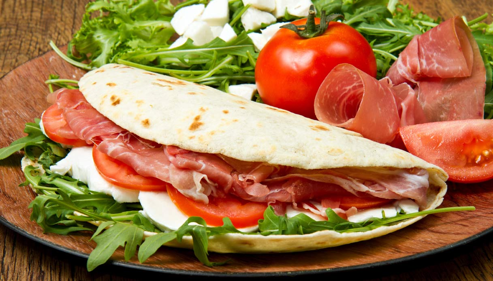

Piadina's Recipe

Description
Piadina is an Italian flatbread, a no-yeast soft dough made only with flour, water and extra virgin olive oil or lard.
Just few ingredients to make a delicious bread for all of your favourite sandwiches.
Ingredients
- 500 g (3 ¾ cups) of all purpose flour
- 220 ml (1 cup) of water at room temperature
- 80 ml (about ⅓ cup) of extra virgin olive oil or 80 g (about ⅓ cup) of lard
- 1 teaspoon of fine salt
- ⅓ teaspoon of baking soda
Steps
- First place the flour in a bowl with the baking soda and salt. Mix well. Then add the oil or, if you prefer, the softened lard. We used extra virgin olive oil.
- Now add the water at room temperature. Mix everything for a few minutes until you get a soft but compact dough. If the dough sticks to your fingers, add a sprinkling
of flour again. Piadina dough must be soft but not sticky.
- Cover the dough with cling film and let it rest at room temperature for about 30 minutes. Then divide the dough into 6 portions of about 100/110 g each (3.5/3.8 0z).
- Work them a little with your hand on the work surface in order to have balls with a smooth surface and let them rest for another 10 minutes covered with a kitchen towel.
Roll out each ball with the help of a rolling pin, forming a disc with a thickness of 4/5 mm (about 0,20 inch) and a diameter of about 20/25 cm (8/10 inch).
- Don’t worry if they don’t turn out perfectly round. Imperfection means “handmade” and no one will think you bought them! Now you have to cook them. But first an IMPORTANT TIP: while cooking a Piadina,
keep the other raw Piadina covered with a cloth. This is to prevent the dough from drying out. (See more in the paragraph: “How to Make Best Piadina Bread: Cooking Tips”).
- So now cook the Piadina one at a time in a preheated non-stick pan. Turn the Piadina after a minute or when bubbles form. Repeat it twice, pricking it here and there with a fork. The piadina must cook
about 2 minutes per side (4 minutes in total). Piadina is ready when it has taken on a slightly golden color and the characteristic small dark spots have appeared on the surface.
- Your homemade Piadina is ready to be stuffed. Arrange them one on top of the other covered with a cloth that will help keep them warm. Bring them to the table stuffed as you like
with what you prefer! Piadina is fantastic with everything, even on its own!